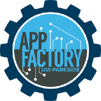
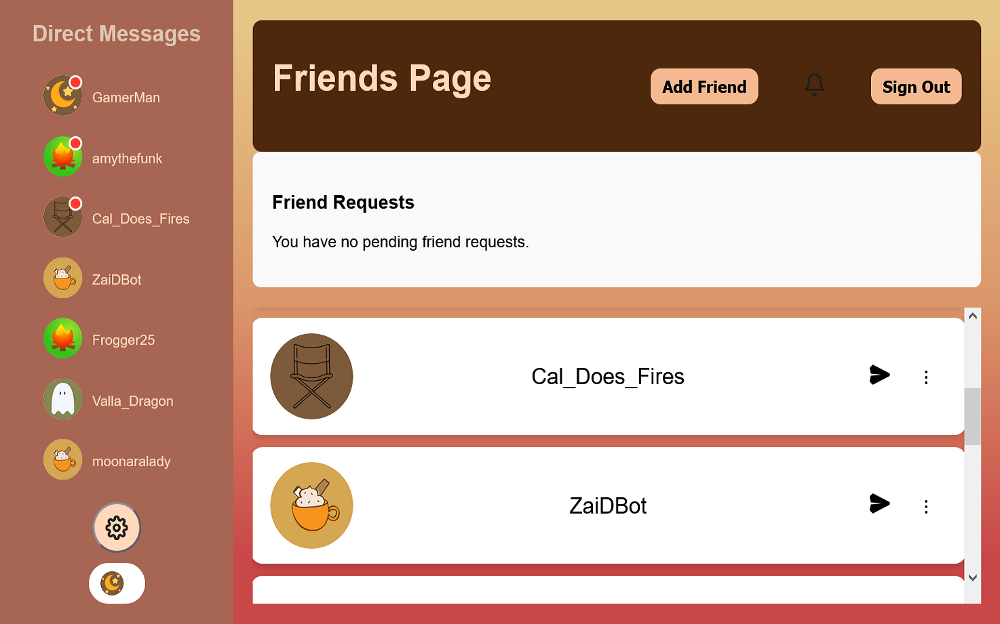
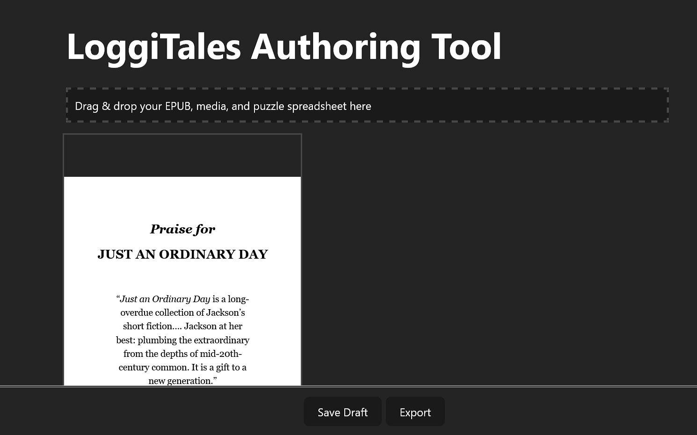
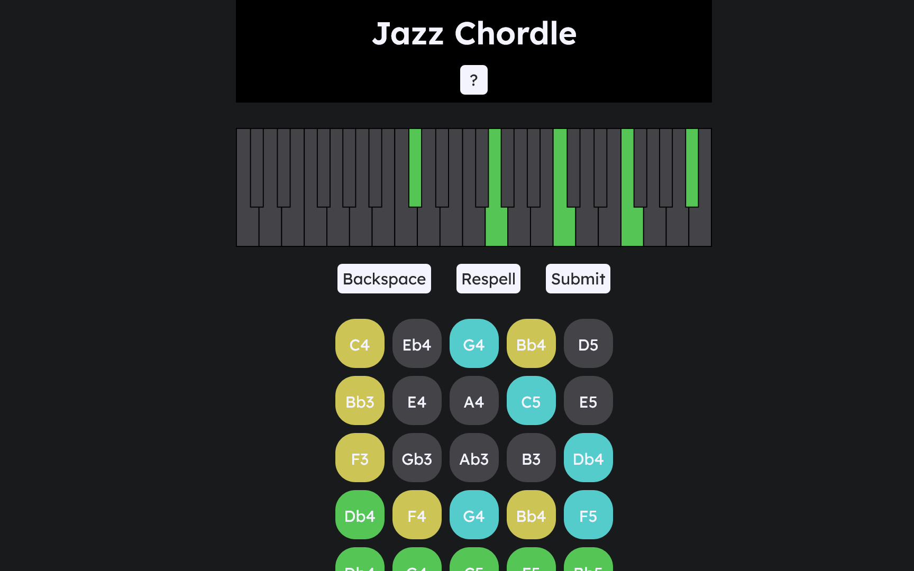

App Factory
Software Engineer Intern
2024-2026
New York, New York, United States
I'm a recent Computer Science graduate from University of Wisconsin - Parkside. I have front-end experience with React and Android evironments with Kotlin. In my free time, I am a jazz pianist and composer. My favorite languages are Java and Python!

App FactorySoftware Engineer Intern
2024-2026

Kotlin and Firebase, 2025 - 2026
A messaging app developed over the course of a school year for Software Engineering Principals at UW-Parkside using Agile methodology.

React.js, 2025
At the App Factory, we developed an EPUB editor, allowing a user to overlay media on a page, streamlining the process for authors creating LoggiTales puzzles in the app.

HTML, CSS, JavaScript, 2024
A Wordle-like puzzle web game where a player must guess the chord of the day.